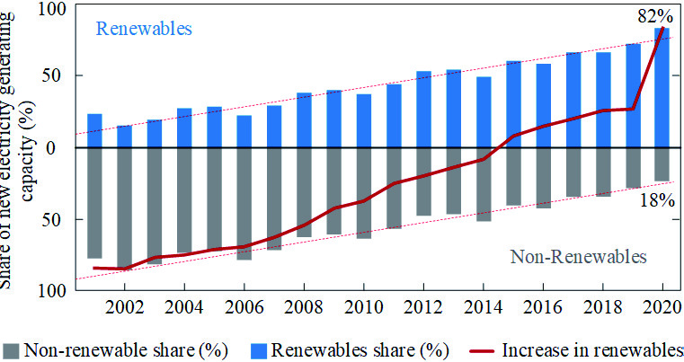
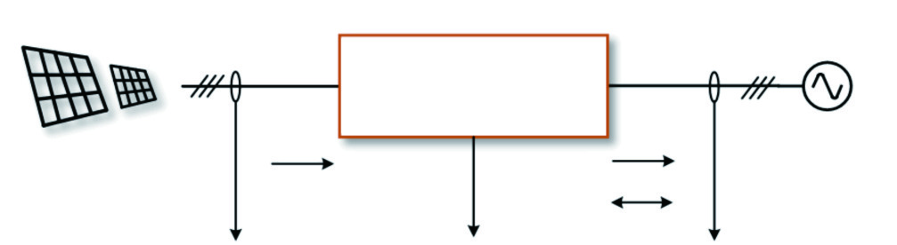
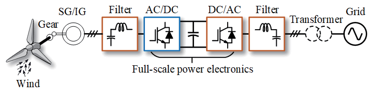
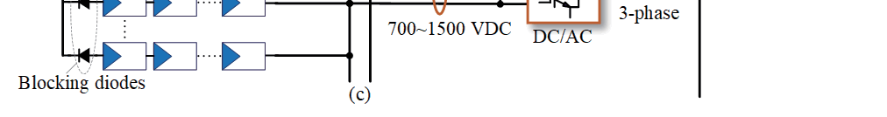
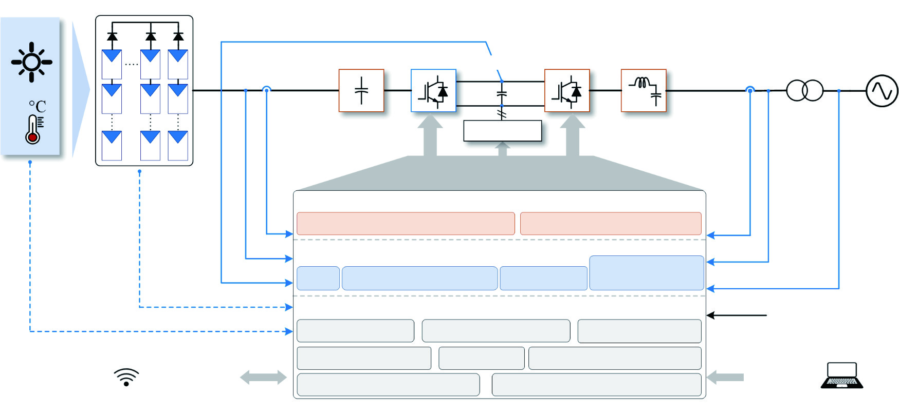
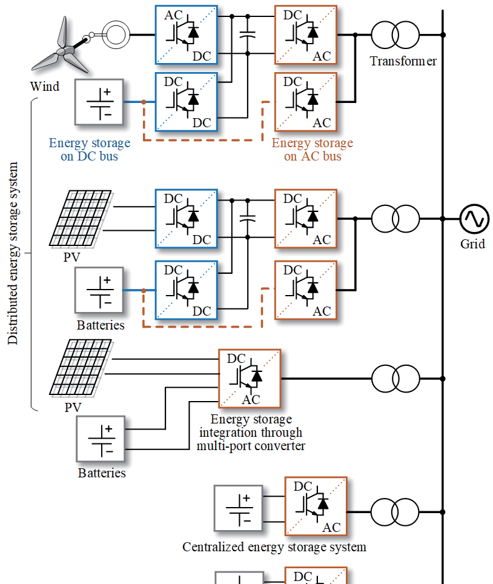

Zhongting Tang, Yongheng Yang, Frede Blaabjerg – IEEE
The rapid expansion of renewable energy has transformed modern power systems into inverter-dominated networks. Photovoltaic and wind generation are interfaced through power electronic converters, replacing traditional synchronous machines. While enabling high efficiency and flexible control, this transition reduces system inertia and introduces harmonic and stability challenges. This work examines converter topologies, control strategies, and performance characteristics that enable reliable renewable integration under modern grid code requirements.
Power electronics is the field of electrical engineering that focuses on the conversion, control, and conditioning of electrical power using semiconductor devices. It plays a critical role in modern energy systems, electric vehicles, renewable energy integration, and industrial automation. Efficient power conversion is essential to reduce energy losses and improve system performance. This project explores the fundamental principles and applications of power electronic converters.

Voltage Source Converters (VSCs) provide the interface between renewable sources and the grid. Two-level (2L-VSC) and three-level neutral-point-clamped (3L-NPC) converters are widely used in medium- and high-power systems due to their efficiency and improved harmonic performance. Multilevel structures reduce switching stress and improve output voltage quality, making them suitable for large-scale photovoltaic and wind applications.

Converter control is organized in hierarchical layers. The inner loop regulates current and voltage to ensure stable operation, while the outer loop controls power flow and DC-link voltage.
Advanced control functions such as Maximum Power Point Tracking (MPPT), reactive power support, and frequency response enable compliance with modern grid codes and enhance overall system stability.

Modern grid codes require Fault Ride-Through (FRT) capability, ensuring converters remain connected during voltage dips and inject controlled current to support grid recovery.

Fast transient response enables compliance with frequency-watt control and voltage support requirements.

| Parameter | Value |
|---|---|
| Peak Efficiency | 94–98% |
| THD | < 5% |
| Response Time | < 10 ms |
Wide-bandgap (SiC) devices enhance thermal performance and efficiency.
Power electronics has evolved from a simple energy conversion interface into a critical component for real-time grid stabilization.

[1] Z. Tang, Y. Yang, and F. Blaabjerg, CSEE JPES, 2022.
[2] IEEE Std 1547-2018.
[3] IEEE Std 519-2014.